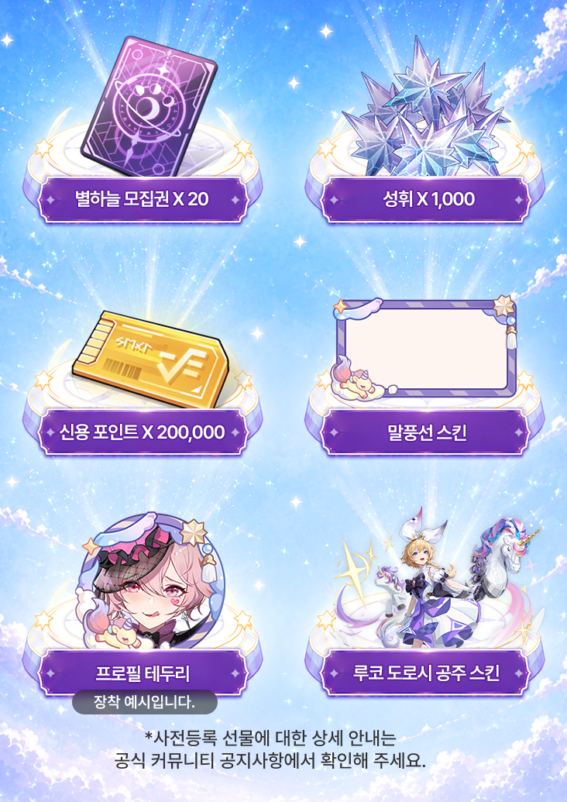

히간이루실 사전예약 정보 정리, 넥슨 신규 브랜드 select all 첫 타이틀 서브컬처 수집형 RPG
넥슨이 6월 30일부터 서브컬처 수집형 RPG '히간: 이루실'의 국내 사전등록을 시작했는데요. 이번 작품은 넥슨이 새로 만든 퍼블리싱 브랜드 'select all'의 첫 번째 타이틀이라 눈여겨보는 분들이 많더라고요. 오늘은 사전등록 기간이랑 보상, 게임이 어떤 콘셉트인지까지 한 번에 정리해볼게요.
히간: 이루실 공식 로고예요.
이미지 출처: 히간: 이루실 공식 사전등록 페이지
select all이 뭐길래? 넥슨 신규 브랜드
먼저 'select all'이 뭔지부터 짚고 갈게요. select all은 넥슨이 새로 만든 퍼블리싱 전용 브랜드인데요, 데이터 기반으로 잠재력 있는 게임을 골라내는 검토 프로세스를 거쳐 선보이는 라인업이라고 해요. 히간: 이루실이 그 첫 타자로 낙점된 셈이라, 넥슨이 이 게임에 거는 기대가 어느 정도인지 짐작이 되죠.
히간이루실은 어떤 게임이에요?
히간: 이루실은 중국 개발사 빌리빌리(Bilibili Inc.)가 만든 서브컬처 수집형 3D RPG예요. 이미 2023년 4월에 글로벌 출시를 했고, 2024년 12월엔 중국에서, 2025년 12월엔 대만·홍콩·마카오에서 '2.0 리메이크' 버전이 순차로 나왔는데요. 넥슨은 이 가장 최신 2.0 리메이크 버전을 국내에 들여올 계획이라고 밝혔어요. 즉 완전 신작이 아니라 이미 해외에서 검증된 완성도 높은 버전으로 들어온다는 얘기라 초기 콘텐츠 걱정은 좀 덜해도 될 것 같아요.
세계관은 마법과 과학이 공존하는 다크 판타지인데요, 균형이 무너져가는 세계에서 플레이어가 '고페르 극단'이라는 특별한 단체의 단장이 되어 잃어버린 낙원을 되찾기 위한 여정에 나서는 스토리예요. 전투는 실시간 3D 액션과 카드 전술을 결합한 하이브리드 방식으로 진행되고, 2.0 버전부터는 반복 사냥 피로도를 덜어주는 방치형 시스템도 들어갔다고 하네요. 여기에 극장판 애니메이션급 고퀄리티 컷신과 일본어 풀보이스 연출까지 붙어서, 서브컬처 장르 좋아하시는 분들이라면 그래픽이나 연출 쪽은 기대해봐도 좋을 거 같아요.
플랫폼은 모바일과 PC 멀티플랫폼이고, 국내 정확한 출시일은 아직 미정이에요. 사전등록 페이지에도 별도 출시일 안내 없이 "런칭 시점까지"라고만 되어 있어서, 출시일이 잡히면 그때 다시 정리해드릴게요.
사전등록 기간이랑 방법
사전등록 기간은 2026년 6월 30일(화) 오전 10시부터 게임 런칭 시점까지예요. 마감일을 따로 못 박아두지 않고 출시할 때까지 쭉 여는 방식이라, 나중에 관심 생겨서 등록해도 늦지 않아요. 다만 보상은 먼저 등록해둘수록 마음이 편하니 미리 걸어두는 걸 추천드려요.
등록 방법은 두 가지예요. 공식 홈페이지에서 휴대전화 번호로 등록하거나, 앱스토어·구글플레이 스토어에서 사전등록 버튼을 누르면 되는데요. 홈페이지 쪽은 공식 안내 기준 010으로 시작하는 번호 인증 방식으로 진행돼요. 히간: 이루실은 공식 페이지에 청소년 이용불가 등급으로 안내돼 있어서, 스토어 사전등록 시 성인 인증이 필요할 수 있으니 참여 전에 공식 안내를 한 번 확인해보시는 걸 추천드려요.
| 항목 | 내용 |
|---|---|
| 사전등록 기간 | 2026.06.30(화) 10:00 ~ 런칭 시점까지 |
| 출시일 | 미정 |
| 장르 | 서브컬처 수집형 3D RPG |
| 플랫폼 | 모바일 · PC |
| 개발/퍼블리싱 | 빌리빌리(개발) · 넥슨 select all(퍼블리싱) |
| 등급 | 청소년 이용불가 |
사전등록 보상 뭘 주나요?
이번 사전등록은 참여자 전원에게 보상을 주는 방식이에요. 등급별로 나뉜 게 아니라 등록만 하면 다 받는 구조라 부담 없이 신청하셔도 될 것 같아요.

보시면 보상이 총 6가지로 정리돼 있어요.
이미지 출처: 히간: 이루실 공식 사전등록 페이지
구성은 공식 사전등록 페이지 기준으로 별하늘 모집권 20장, 성휘 1,000개, 신용 포인트 200,000, 말풍선 스킨, 프로필 테두리, 그리고 캐릭터 '루코'의 도로시 공주 스킨이에요. 모집권 20장이면 초반 캐릭터 뽑기에 바로 써먹을 수 있는 양이라 나쁘지 않고, 루코 전용 코스튬 스킨까지 얹어주는 걸 보면 확실히 신규 유입 유치에 신경 쓴 구성이라는 게 느껴지더라고요. 다만 지급 일정이나 구체적인 방법은 추후 공식 공지로 안내한다고 하니, 그건 좀 더 지켜봐야 할 것 같아요.
대표 캐릭터는 누가 있어요?
공식 캐릭터 페이지 기준으로 유페리아, 클로아, 리사, 이루야, 시스레트 다섯 명이 이름을 올렸는데요. 이 중 지금 공개된 건 유페리아뿐이고 나머지 넷은 아직 실루엣만 보이는 잠금 상태예요.

첫 공개 캐릭터 유페리아예요. "저는 당신의 검이자 방패입니다"라는 대사가 인상적이더라고요.
이미지 출처: 히간: 이루실 공식 사전등록 페이지
나머지 캐릭터들도 짧은 대사만 살짝 공개돼 있는데요, 클로아는 "미래는 운명이 선택하는 걸까요, 아니면 당신이 선택하는 걸까요?"처럼 의미심장한 말투고, 시스레트는 "나는 갈망해... 더 미친 듯이 피어나기를!"처럼 텐션이 확 다른 캐릭터라 벌써부터 각자 개성이 궁금해지더라고요. 🔍 나머지 캐릭터 상세 확인 이 부분은 정식 공개되면 그때 더 자세히 다뤄볼게요.
히간이루실 정리
정리하면 히간: 이루실은 넥슨이 select all 브랜드를 걸고 처음 내놓는 서브컬처 수집형 RPG이고, 이미 해외에서 여러 번 검증된 2.0 리메이크 버전으로 국내에 들어온다는 게 포인트예요. 사전등록은 6월 30일부터 런칭 때까지 계속 열려 있고, 등록만 하면 모집권부터 캐릭터 스킨까지 다 챙길 수 있으니 관심 있으신 분들은 미리 걸어두시는 게 좋을 것 같아요. 출시일 나오는 대로 다시 소식 들고 올게요.